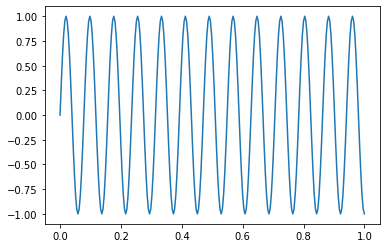

Jupyter Notebook: Python Advanced (2023-11-22 - 2023-11-24)¶
Variables¶
[1]:
a = 1
[2]:
print(a)
1
[3]:
type(a)
[3]:
int
[4]:
a = 'hallo'
[5]:
print(a)
hallo
[6]:
type(a)
[6]:
str
[7]:
t = type(a)
[8]:
print(t)
<class 'str'>
[9]:
type(t)
[9]:
type
[10]:
class Foo:
i = 666
def __init__(self, i):
self.i = i
def bar(self):
return self.i**2
[11]:
type(Foo)
[11]:
type
[12]:
s = str(666)
[13]:
s
[13]:
'666'
[14]:
s = '666'
[15]:
f = Foo(3)
[16]:
f.i
[16]:
3
[17]:
f.bar()
[17]:
9
[18]:
type(f)
[18]:
__main__.Foo
[19]:
type(type(f))
[19]:
type
[20]:
type(Foo.bar)
[20]:
function
[21]:
import sys
[22]:
type(sys)
[22]:
module
[23]:
sys = 666
[24]:
del sys
Assignment, And IDs¶
[25]:
a, b = 1, 2
[26]:
a
[26]:
1
[27]:
b
[27]:
2
[28]:
a = b = 1
[29]:
a = 42
[30]:
id(a)
[30]:
139680347735568
[31]:
b = a
[32]:
id(b)
[32]:
139680347735568
[33]:
b = 666
[34]:
a
[34]:
42
[35]:
a = 42
b = a
[36]:
id(a) == id(b)
[36]:
True
[37]:
a is b
[37]:
True
(Im)Mutability¶
[38]:
a += 1
[39]:
a
[39]:
43
[40]:
b
[40]:
42
Speed Optimization
[41]:
a = 43
[42]:
b = 43
[43]:
a is b
[43]:
True
And Lists? Lists are mutable!
[44]:
l1 = [1,2,3, 'vier']
[45]:
len(l1)
[45]:
4
[46]:
l1[2]
[46]:
3
[47]:
l2 = l1
[48]:
l1 is l2
[48]:
True
[49]:
l1.append(5.0)
[50]:
l1
[50]:
[1, 2, 3, 'vier', 5.0]
[51]:
l2
[51]:
[1, 2, 3, 'vier', 5.0]
[52]:
l1 += [6, 7, 8]
[53]:
l1
[53]:
[1, 2, 3, 'vier', 5.0, 6, 7, 8]
[54]:
l2
[54]:
[1, 2, 3, 'vier', 5.0, 6, 7, 8]
And Tuples? Immutable
[55]:
t1 = (1, 2, 3, 'vier')
[56]:
try:
t1.append(5.0)
except Exception as e:
print(type(e), e)
<class 'AttributeError'> 'tuple' object has no attribute 'append'
[57]:
t2 = t1
[58]:
t2 is t1
[58]:
True
[59]:
t2 += (6, 7, 8)
[60]:
t2 is t1
[60]:
False
Tuple Unpacking¶
[61]:
a, b = 1, 2
[62]:
(a, b) = (1, 2)
[63]:
try:
a, b = 1
except Exception as e:
print(type(e), e)
<class 'TypeError'> cannot unpack non-iterable int object
[64]:
a, b
[64]:
(1, 2)
[65]:
tmp = b
b = a
a = tmp
[66]:
a, b
[66]:
(2, 1)
[67]:
a, b = b, a
[68]:
a, b
[68]:
(1, 2)
[69]:
d = {'one': 1, 'two': 2}
[70]:
type(d)
[70]:
dict
[71]:
for elem in d:
print(elem)
one
two
[72]:
for elem in d.keys():
print(elem)
one
two
[73]:
for elem in d.values():
print(elem)
1
2
[74]:
for elem in d.items():
print(elem)
('one', 1)
('two', 2)
[75]:
for elem in d.items():
k = elem[0]
v = elem[1]
print(k, v)
one 1
two 2
[76]:
for k, v in d.items():
print(k, v)
one 1
two 2
Datatypes¶
Integers¶
[77]:
i = 0
[78]:
i = -1
[79]:
i = 2**64-1
[80]:
hex(i)
[80]:
'0xffffffffffffffff'
[81]:
i += 1
[82]:
i
[82]:
18446744073709551616
[83]:
hex(i)
[83]:
'0x10000000000000000'
[84]:
i**=10
[85]:
hex(i)
[85]:
'0x10000000000000000000000000000000000000000000000000000000000000000000000000000000000000000000000000000000000000000000000000000000000000000000000000000000000000000'
[86]:
3/2
[86]:
1.5
[87]:
3//2
[87]:
1
[88]:
type(3//2)
[88]:
int
Operator Overloading (Basics)¶
[89]:
a = 3
[90]:
a - 2
[90]:
1
[91]:
a.__sub__(2)
[91]:
1
[92]:
a - 2.0
[92]:
1.0
[93]:
a.__sub__(2.0)
[93]:
NotImplemented
[94]:
b = 2.0
[95]:
b.__rsub__(a)
[95]:
1.0
Datatype Conversions¶
[96]:
i = 666
[97]:
s = str(i)
[98]:
s
[98]:
'666'
[99]:
i = int(s)
[100]:
i
[100]:
666
[101]:
s = 'abc'
[102]:
try:
int(s)
except Exception as e:
print(type(e), e)
<class 'ValueError'> invalid literal for int() with base 10: 'abc'
[103]:
i = int(s, 16)
[104]:
i
[104]:
2748
[105]:
try:
s = '0xabc'
int(s)
except Exception as e:
print(type(e), e)
<class 'ValueError'> invalid literal for int() with base 10: '0xabc'
[106]:
int(s, 16)
[106]:
2748
[107]:
float('2.3')
[107]:
2.3
[108]:
def convert_to_int(obj):
if type(obj) is int:
return obj
elif type(obj) is float:
return int(obj)
# ...
Compound Datatypes¶
Dictionary¶
[109]:
d = {'one': 1, 'two': 2}
[110]:
d['one']
[110]:
1
[111]:
try:
d['three']
except Exception as e:
print(type(e), e)
<class 'KeyError'> 'three'
[112]:
d['three'] = 3
[113]:
v = d.get('four')
print(v)
None
[114]:
v = d.get('four')
if v is None:
v = 4
[115]:
d.get('four', 4)
[115]:
4
[116]:
v = d.get('four')
if v is None:
v = 4
d['four'] = v
[117]:
d['four']
[117]:
4
[118]:
d.setdefault('five', 5)
[118]:
5
[119]:
d['five']
[119]:
5
Set¶
[120]:
s = {1,2,3}
[121]:
s.add(4)
[122]:
s.remove(1)
[123]:
len(s)
[123]:
3
[124]:
s.add(4)
[125]:
len(s)
[125]:
3
[126]:
2 in s
[126]:
True
in on lists: performance!
[127]:
3 in s
[127]:
True
[128]:
l = [1, 2, 3]
[129]:
1 in l
[129]:
True
[130]:
2 in l
[130]:
True
[131]:
3 in l
[131]:
True
[132]:
100 in l
[132]:
False
Kann man listen in sets konvertieren?
[133]:
l = [1,2,3]
s = set(l) # iterable
[134]:
s
[134]:
{1, 2, 3}
[135]:
set('abc')
[135]:
{'a', 'b', 'c'}
[136]:
for elem in 'abc':
print(elem)
a
b
c
[137]:
try:
set('abc', 'def')
except Exception as e:
print(type(e), e)
<class 'TypeError'> set expected at most 1 argument, got 2
[138]:
set(['abc'])
[138]:
{'abc'}
[139]:
set(['abc', 'def'])
[139]:
{'abc', 'def'}
And Iterables? The Iterator Protocol!¶
[140]:
set(range(3))
[140]:
{0, 1, 2}
[141]:
for elem in range(3):
print(elem)
0
1
2
[142]:
r = range(3)
[143]:
type(r)
[143]:
range
[144]:
it = iter(r)
[145]:
next(it)
[145]:
0
[146]:
next(it)
[146]:
1
[147]:
next(it)
[147]:
2
[148]:
try:
next(it)
except Exception as e:
print(type(e), e)
<class 'StopIteration'>
[149]:
def drei_ints():
return [1,2,3]
[150]:
for elem in drei_ints():
print(elem)
1
2
3
[151]:
def drei_ints():
print('eins')
yield 1
print('zwei')
yield 2
print('drei')
yield 3
print('und aus')
[152]:
for elem in drei_ints():
print(elem)
eins
1
zwei
2
drei
3
und aus
[153]:
d = drei_ints()
[154]:
it = iter(d)
[155]:
next(it)
eins
[155]:
1
[156]:
next(it)
zwei
[156]:
2
[157]:
next(it)
drei
[157]:
3
[158]:
try:
next(it)
except Exception as e:
print(type(e), e)
und aus
<class 'StopIteration'>
[159]:
numbers = [0, 1, 2, 3, 4, 5]
[160]:
squares = []
for elem in numbers:
squares.append(elem**2)
[161]:
squares
[161]:
[0, 1, 4, 9, 16, 25]
[162]:
def squares(nums):
sqs = []
for elem in nums:
sqs.append(elem**2)
return sqs
[163]:
for elem in squares(numbers):
print(elem)
0
1
4
9
16
25
[164]:
def squares(nums):
for elem in nums:
yield elem**2
[165]:
for elem in squares(numbers):
print(elem)
0
1
4
9
16
25
[166]:
numbers
[166]:
[0, 1, 2, 3, 4, 5]
[167]:
[elem**2 for elem in numbers]
[167]:
[0, 1, 4, 9, 16, 25]
[168]:
sqs = (elem**2 for elem in numbers)
[169]:
for sq in sqs:
print(sq)
0
1
4
9
16
25
Strings¶
[170]:
'''\
zeile 1
zeile 2
'''
[170]:
'zeile 1\nzeile 2\n'
[171]:
def foo(bar):
'''
Foos a bar.
``bar`` should be a str.
'''
return 'foo' + bar
[172]:
foo('abc')
[172]:
'fooabc'
[173]:
foo
[173]:
<function __main__.foo(bar)>
[174]:
foo.__doc__
[174]:
'\n Foos a bar.\n ``bar`` should be a str.\n '
[175]:
help(foo)
Help on function foo in module __main__:
foo(bar)
Foos a bar.
``bar`` should be a str.
Methods¶
[176]:
s = 'mississippi'
[177]:
s.count('ss')
[177]:
2
[178]:
pos = s.find('ss')
pos
[178]:
2
[179]:
s.find('ss', pos+1)
[179]:
5
[180]:
s.find('xx')
[180]:
-1
[181]:
s.index('ss')
[181]:
2
[182]:
try:
s.index('xx')
except Exception as e:
print(type(e), e)
<class 'ValueError'> substring not found
[183]:
'data.csv'.endswith('.csv')
[183]:
True
[184]:
userline = 'jfasch:x:1000:1000: Jörg Faschingbauer :/home/jfasch:/bin/bash'
[185]:
userline.split(':')
[185]:
['jfasch',
'x',
'1000',
'1000',
' Jörg Faschingbauer ',
'/home/jfasch',
'/bin/bash']
[186]:
name, _, uid, gid, descr, home, shell = userline.split(':')
[187]:
descr.strip()
[187]:
'Jörg Faschingbauer'
[188]:
descr.rstrip()
[188]:
' Jörg Faschingbauer'
[189]:
descr.strip(' \t')
[189]:
'Jörg Faschingbauer'
[190]:
descr.strip(' \tJr')
[190]:
'örg Faschingbaue'
[191]:
user = ['jfasch', 'x', '1000', '1000', 'Joerg Faschingbauer', '/home/jfasch', '/bin/bash']
[192]:
':'.join(user)
[192]:
'jfasch:x:1000:1000:Joerg Faschingbauer:/home/jfasch:/bin/bash'
[193]:
'XXX'.center(80)
[193]:
' XXX '
[194]:
'xxx'.upper()
[194]:
'XXX'
[195]:
userline
[195]:
'jfasch:x:1000:1000: Jörg Faschingbauer :/home/jfasch:/bin/bash'
[196]:
name, _, _, _, descr, home, shell = userline.split(':')
[197]:
userline
[197]:
'jfasch:x:1000:1000: Jörg Faschingbauer :/home/jfasch:/bin/bash'
[198]:
userline.split(':')
[198]:
['jfasch',
'x',
'1000',
'1000',
' Jörg Faschingbauer ',
'/home/jfasch',
'/bin/bash']
[199]:
[elem.strip().upper() for elem in userline.split(':')]
[199]:
['JFASCH',
'X',
'1000',
'1000',
'JÖRG FASCHINGBAUER',
'/HOME/JFASCH',
'/BIN/BASH']
[200]:
l = [300, 3, 20, 50, 101]
[201]:
for elem in filter(lambda x: x<55, l):
print(elem)
3
20
50
[202]:
[elem for elem in l if elem <55]
[202]:
[3, 20, 50]
File IO¶
[203]:
f = open('/etc/passwd')
[204]:
f.read()
[204]:
'root:x:0:0:root:/root:/bin/bash\nbin:x:1:1:bin:/bin:/sbin/nologin\ndaemon:x:2:2:daemon:/sbin:/sbin/nologin\nadm:x:3:4:adm:/var/adm:/sbin/nologin\nlp:x:4:7:lp:/var/spool/lpd:/sbin/nologin\nsync:x:5:0:sync:/sbin:/bin/sync\nshutdown:x:6:0:shutdown:/sbin:/sbin/shutdown\nhalt:x:7:0:halt:/sbin:/sbin/halt\nmail:x:8:12:mail:/var/spool/mail:/sbin/nologin\noperator:x:11:0:operator:/root:/sbin/nologin\ngames:x:12:100:games:/usr/games:/sbin/nologin\nftp:x:14:50:FTP User:/var/ftp:/sbin/nologin\nnobody:x:65534:65534:Kernel Overflow User:/:/sbin/nologin\ndbus:x:81:81:System message bus:/:/sbin/nologin\napache:x:48:48:Apache:/usr/share/httpd:/sbin/nologin\ntss:x:59:59:Account used for TPM access:/dev/null:/sbin/nologin\nsystemd-network:x:192:192:systemd Network Management:/:/usr/sbin/nologin\nsystemd-oom:x:999:999:systemd Userspace OOM Killer:/:/usr/sbin/nologin\nsystemd-resolve:x:193:193:systemd Resolver:/:/usr/sbin/nologin\nqemu:x:107:107:qemu user:/:/sbin/nologin\npolkitd:x:998:997:User for polkitd:/:/sbin/nologin\navahi:x:70:70:Avahi mDNS/DNS-SD Stack:/var/run/avahi-daemon:/sbin/nologin\nunbound:x:997:995:Unbound DNS resolver:/etc/unbound:/sbin/nologin\nnm-openconnect:x:996:994:NetworkManager user for OpenConnect:/:/sbin/nologin\ngeoclue:x:995:993:User for geoclue:/var/lib/geoclue:/sbin/nologin\nusbmuxd:x:113:113:usbmuxd user:/:/sbin/nologin\ngluster:x:994:992:GlusterFS daemons:/run/gluster:/sbin/nologin\nrtkit:x:172:172:RealtimeKit:/proc:/sbin/nologin\nchrony:x:993:990::/var/lib/chrony:/sbin/nologin\nsaslauth:x:992:76:Saslauthd user:/run/saslauthd:/sbin/nologin\ndnsmasq:x:991:989:Dnsmasq DHCP and DNS server:/var/lib/dnsmasq:/sbin/nologin\nrpc:x:32:32:Rpcbind Daemon:/var/lib/rpcbind:/sbin/nologin\ncolord:x:990:988:User for colord:/var/lib/colord:/sbin/nologin\nrpcuser:x:29:29:RPC Service User:/var/lib/nfs:/sbin/nologin\nopenvpn:x:989:987:OpenVPN:/etc/openvpn:/sbin/nologin\nnm-openvpn:x:988:986:Default user for running openvpn spawned by NetworkManager:/:/sbin/nologin\npipewire:x:987:985:PipeWire System Daemon:/var/run/pipewire:/sbin/nologin\nabrt:x:173:173::/etc/abrt:/sbin/nologin\nflatpak:x:986:983:User for flatpak system helper:/:/sbin/nologin\ngdm:x:42:42:GNOME Display Manager:/var/lib/gdm:/sbin/nologin\ngnome-initial-setup:x:985:982::/run/gnome-initial-setup/:/sbin/nologin\nvboxadd:x:984:1::/var/run/vboxadd:/sbin/nologin\nsshd:x:74:74:Privilege-separated SSH:/usr/share/empty.sshd:/sbin/nologin\ntcpdump:x:72:72::/:/sbin/nologin\njfasch:x:1000:1000:Jörg Faschingbauer:/home/jfasch:/bin/bash\nsystemd-coredump:x:978:978:systemd Core Dumper:/:/usr/sbin/nologin\nsystemd-timesync:x:977:977:systemd Time Synchronization:/:/usr/sbin/nologin\nmosquitto:x:976:976:Mosquitto Broker:/etc/mosquitto:/sbin/nologin\n'
[205]:
f = open('/etc/passwd')
[206]:
f.readlines()
[206]:
['root:x:0:0:root:/root:/bin/bash\n',
'bin:x:1:1:bin:/bin:/sbin/nologin\n',
'daemon:x:2:2:daemon:/sbin:/sbin/nologin\n',
'adm:x:3:4:adm:/var/adm:/sbin/nologin\n',
'lp:x:4:7:lp:/var/spool/lpd:/sbin/nologin\n',
'sync:x:5:0:sync:/sbin:/bin/sync\n',
'shutdown:x:6:0:shutdown:/sbin:/sbin/shutdown\n',
'halt:x:7:0:halt:/sbin:/sbin/halt\n',
'mail:x:8:12:mail:/var/spool/mail:/sbin/nologin\n',
'operator:x:11:0:operator:/root:/sbin/nologin\n',
'games:x:12:100:games:/usr/games:/sbin/nologin\n',
'ftp:x:14:50:FTP User:/var/ftp:/sbin/nologin\n',
'nobody:x:65534:65534:Kernel Overflow User:/:/sbin/nologin\n',
'dbus:x:81:81:System message bus:/:/sbin/nologin\n',
'apache:x:48:48:Apache:/usr/share/httpd:/sbin/nologin\n',
'tss:x:59:59:Account used for TPM access:/dev/null:/sbin/nologin\n',
'systemd-network:x:192:192:systemd Network Management:/:/usr/sbin/nologin\n',
'systemd-oom:x:999:999:systemd Userspace OOM Killer:/:/usr/sbin/nologin\n',
'systemd-resolve:x:193:193:systemd Resolver:/:/usr/sbin/nologin\n',
'qemu:x:107:107:qemu user:/:/sbin/nologin\n',
'polkitd:x:998:997:User for polkitd:/:/sbin/nologin\n',
'avahi:x:70:70:Avahi mDNS/DNS-SD Stack:/var/run/avahi-daemon:/sbin/nologin\n',
'unbound:x:997:995:Unbound DNS resolver:/etc/unbound:/sbin/nologin\n',
'nm-openconnect:x:996:994:NetworkManager user for OpenConnect:/:/sbin/nologin\n',
'geoclue:x:995:993:User for geoclue:/var/lib/geoclue:/sbin/nologin\n',
'usbmuxd:x:113:113:usbmuxd user:/:/sbin/nologin\n',
'gluster:x:994:992:GlusterFS daemons:/run/gluster:/sbin/nologin\n',
'rtkit:x:172:172:RealtimeKit:/proc:/sbin/nologin\n',
'chrony:x:993:990::/var/lib/chrony:/sbin/nologin\n',
'saslauth:x:992:76:Saslauthd user:/run/saslauthd:/sbin/nologin\n',
'dnsmasq:x:991:989:Dnsmasq DHCP and DNS server:/var/lib/dnsmasq:/sbin/nologin\n',
'rpc:x:32:32:Rpcbind Daemon:/var/lib/rpcbind:/sbin/nologin\n',
'colord:x:990:988:User for colord:/var/lib/colord:/sbin/nologin\n',
'rpcuser:x:29:29:RPC Service User:/var/lib/nfs:/sbin/nologin\n',
'openvpn:x:989:987:OpenVPN:/etc/openvpn:/sbin/nologin\n',
'nm-openvpn:x:988:986:Default user for running openvpn spawned by NetworkManager:/:/sbin/nologin\n',
'pipewire:x:987:985:PipeWire System Daemon:/var/run/pipewire:/sbin/nologin\n',
'abrt:x:173:173::/etc/abrt:/sbin/nologin\n',
'flatpak:x:986:983:User for flatpak system helper:/:/sbin/nologin\n',
'gdm:x:42:42:GNOME Display Manager:/var/lib/gdm:/sbin/nologin\n',
'gnome-initial-setup:x:985:982::/run/gnome-initial-setup/:/sbin/nologin\n',
'vboxadd:x:984:1::/var/run/vboxadd:/sbin/nologin\n',
'sshd:x:74:74:Privilege-separated SSH:/usr/share/empty.sshd:/sbin/nologin\n',
'tcpdump:x:72:72::/:/sbin/nologin\n',
'jfasch:x:1000:1000:Jörg Faschingbauer:/home/jfasch:/bin/bash\n',
'systemd-coredump:x:978:978:systemd Core Dumper:/:/usr/sbin/nologin\n',
'systemd-timesync:x:977:977:systemd Time Synchronization:/:/usr/sbin/nologin\n',
'mosquitto:x:976:976:Mosquitto Broker:/etc/mosquitto:/sbin/nologin\n']
[207]:
f = open('/etc/passwd')
[208]:
del f
[209]:
with open('/etc/passwd') as f:
print(f.readline())
print(f.readline())
root:x:0:0:root:/root:/bin/bash
bin:x:1:1:bin:/bin:/sbin/nologin
[210]:
f = open('/etc/passwd', 'r') # 'r' is default
[211]:
for line in f:
print(line)
root:x:0:0:root:/root:/bin/bash
bin:x:1:1:bin:/bin:/sbin/nologin
daemon:x:2:2:daemon:/sbin:/sbin/nologin
adm:x:3:4:adm:/var/adm:/sbin/nologin
lp:x:4:7:lp:/var/spool/lpd:/sbin/nologin
sync:x:5:0:sync:/sbin:/bin/sync
shutdown:x:6:0:shutdown:/sbin:/sbin/shutdown
halt:x:7:0:halt:/sbin:/sbin/halt
mail:x:8:12:mail:/var/spool/mail:/sbin/nologin
operator:x:11:0:operator:/root:/sbin/nologin
games:x:12:100:games:/usr/games:/sbin/nologin
ftp:x:14:50:FTP User:/var/ftp:/sbin/nologin
nobody:x:65534:65534:Kernel Overflow User:/:/sbin/nologin
dbus:x:81:81:System message bus:/:/sbin/nologin
apache:x:48:48:Apache:/usr/share/httpd:/sbin/nologin
tss:x:59:59:Account used for TPM access:/dev/null:/sbin/nologin
systemd-network:x:192:192:systemd Network Management:/:/usr/sbin/nologin
systemd-oom:x:999:999:systemd Userspace OOM Killer:/:/usr/sbin/nologin
systemd-resolve:x:193:193:systemd Resolver:/:/usr/sbin/nologin
qemu:x:107:107:qemu user:/:/sbin/nologin
polkitd:x:998:997:User for polkitd:/:/sbin/nologin
avahi:x:70:70:Avahi mDNS/DNS-SD Stack:/var/run/avahi-daemon:/sbin/nologin
unbound:x:997:995:Unbound DNS resolver:/etc/unbound:/sbin/nologin
nm-openconnect:x:996:994:NetworkManager user for OpenConnect:/:/sbin/nologin
geoclue:x:995:993:User for geoclue:/var/lib/geoclue:/sbin/nologin
usbmuxd:x:113:113:usbmuxd user:/:/sbin/nologin
gluster:x:994:992:GlusterFS daemons:/run/gluster:/sbin/nologin
rtkit:x:172:172:RealtimeKit:/proc:/sbin/nologin
chrony:x:993:990::/var/lib/chrony:/sbin/nologin
saslauth:x:992:76:Saslauthd user:/run/saslauthd:/sbin/nologin
dnsmasq:x:991:989:Dnsmasq DHCP and DNS server:/var/lib/dnsmasq:/sbin/nologin
rpc:x:32:32:Rpcbind Daemon:/var/lib/rpcbind:/sbin/nologin
colord:x:990:988:User for colord:/var/lib/colord:/sbin/nologin
rpcuser:x:29:29:RPC Service User:/var/lib/nfs:/sbin/nologin
openvpn:x:989:987:OpenVPN:/etc/openvpn:/sbin/nologin
nm-openvpn:x:988:986:Default user for running openvpn spawned by NetworkManager:/:/sbin/nologin
pipewire:x:987:985:PipeWire System Daemon:/var/run/pipewire:/sbin/nologin
abrt:x:173:173::/etc/abrt:/sbin/nologin
flatpak:x:986:983:User for flatpak system helper:/:/sbin/nologin
gdm:x:42:42:GNOME Display Manager:/var/lib/gdm:/sbin/nologin
gnome-initial-setup:x:985:982::/run/gnome-initial-setup/:/sbin/nologin
vboxadd:x:984:1::/var/run/vboxadd:/sbin/nologin
sshd:x:74:74:Privilege-separated SSH:/usr/share/empty.sshd:/sbin/nologin
tcpdump:x:72:72::/:/sbin/nologin
jfasch:x:1000:1000:Jörg Faschingbauer:/home/jfasch:/bin/bash
systemd-coredump:x:978:978:systemd Core Dumper:/:/usr/sbin/nologin
systemd-timesync:x:977:977:systemd Time Synchronization:/:/usr/sbin/nologin
mosquitto:x:976:976:Mosquitto Broker:/etc/mosquitto:/sbin/nologin
Encoding¶
[216]:
f = open('/etc/passwd', encoding='ascii')
[217]:
try:
for line in f:
print(line)
except Exception as e:
print(type(e), e)
<class 'UnicodeDecodeError'> 'ascii' codec can't decode byte 0xc3 in position 2440: ordinal not in range(128)
[218]:
f = open('/etc/passwd', encoding='utf-8')
[220]:
for line in f:
print(line)
Encoding¶
[221]:
s = 'abc'
[222]:
import sys
[223]:
sys.getsizeof(s)
[223]:
52
[224]:
s = 'a'
[225]:
sys.getsizeof(s)
[225]:
50
[226]:
s = 'Liebe Grüße, Jörg'
[229]:
enc_s = s.encode('iso-8859-1')
[230]:
enc_s
[230]:
b'Liebe Gr\xfc\xdfe, J\xf6rg'
[231]:
type(enc_s)
[231]:
bytes
[232]:
enc_s_recvd = enc_s
[233]:
enc_s_recvd.decode('iso-8859-5')
[233]:
'Liebe Grќпe, Jіrg'
[234]:
lg = '祝好'
[235]:
lg.encode('iso-8859-1')
---------------------------------------------------------------------------
UnicodeEncodeError Traceback (most recent call last)
/tmp/ipykernel_81650/1521975281.py in <module>
----> 1 lg.encode('iso-8859-1')
UnicodeEncodeError: 'latin-1' codec can't encode characters in position 0-1: ordinal not in range(256)
[236]:
lg.encode('big5')
[236]:
b'\xaf\xac\xa6n'
[237]:
len(lg)
[237]:
2
[238]:
lg.encode('utf-8')
[238]:
b'\xe7\xa5\x9d\xe5\xa5\xbd'
[239]:
lg.encode('utf-32')
[239]:
b'\xff\xfe\x00\x00]y\x00\x00}Y\x00\x00'
[240]:
lg
[240]:
'祝好'
[241]:
joerg = 'Jörg'
[242]:
lg_joerg = lg + ', ' + joerg
[247]:
lg_joerg.encode('utf-8')
[247]:
b'\xe7\xa5\x9d\xe5\xa5\xbd, J\xc3\xb6rg'
[248]:
f = open('/etc/passwd', encoding='utf-8')
[249]:
f.readline()
[249]:
'root:x:0:0:root:/root:/bin/bash\n'
[252]:
f = open('/etc/passwd', 'br')
[254]:
content = f.readline()
[256]:
try:
content += joerg
except Exception as e:
print(type(e), e)
<class 'TypeError'> can't concat str to bytes
numpy, pandas, matplotlib¶
[16]:
f = open('data.csv')
[17]:
import csv
[18]:
rdr = csv.DictReader(f, delimiter=';')
[19]:
for obj in rdr:
print(obj)
{'LinksUnten': '45.0', 'RechtsOben': '33.0', 'MeinSinusSensor': '0.0'}
{'LinksUnten': '45.0', 'RechtsOben': '33.0', 'MeinSinusSensor': '0.309'}
{'LinksUnten': '45.0', 'RechtsOben': '33.0', 'MeinSinusSensor': '0.588'}
{'LinksUnten': '45.0', 'RechtsOben': '33.0', 'MeinSinusSensor': '0.809'}
{'LinksUnten': '45.0', 'RechtsOben': '33.0', 'MeinSinusSensor': '0.951'}
{'LinksUnten': '45.0', 'RechtsOben': '33.0', 'MeinSinusSensor': '1.0'}
{'LinksUnten': '45.0', 'RechtsOben': '33.0', 'MeinSinusSensor': '0.951'}
{'LinksUnten': '45.0', 'RechtsOben': '33.0', 'MeinSinusSensor': '0.809'}
{'LinksUnten': '45.0', 'RechtsOben': '33.0', 'MeinSinusSensor': '0.588'}
{'LinksUnten': '45.0', 'RechtsOben': '33.0', 'MeinSinusSensor': '0.309'}
{'LinksUnten': '45.0', 'RechtsOben': '33.0', 'MeinSinusSensor': '0.0'}
{'LinksUnten': '45.0', 'RechtsOben': '33.0', 'MeinSinusSensor': '-0.309'}
{'LinksUnten': '45.0', 'RechtsOben': '33.0', 'MeinSinusSensor': '-0.588'}
{'LinksUnten': '45.0', 'RechtsOben': '33.0', 'MeinSinusSensor': '-0.809'}
{'LinksUnten': '45.0', 'RechtsOben': '33.0', 'MeinSinusSensor': '-0.951'}
{'LinksUnten': '45.0', 'RechtsOben': '33.0', 'MeinSinusSensor': '-1.0'}
{'LinksUnten': '45.0', 'RechtsOben': '33.0', 'MeinSinusSensor': '-0.951'}
{'LinksUnten': '45.0', 'RechtsOben': '33.0', 'MeinSinusSensor': '-0.809'}
{'LinksUnten': '45.0', 'RechtsOben': '33.0', 'MeinSinusSensor': '-0.588'}
{'LinksUnten': '45.0', 'RechtsOben': '33.0', 'MeinSinusSensor': '-0.309'}
{'LinksUnten': '45.0', 'RechtsOben': '33.0', 'MeinSinusSensor': '-0.0'}
{'LinksUnten': '45.0', 'RechtsOben': '33.0', 'MeinSinusSensor': '0.309'}
{'LinksUnten': '45.0', 'RechtsOben': '33.0', 'MeinSinusSensor': '0.588'}
{'LinksUnten': '45.0', 'RechtsOben': '33.0', 'MeinSinusSensor': '0.809'}
{'LinksUnten': '45.0', 'RechtsOben': '33.0', 'MeinSinusSensor': '0.951'}
{'LinksUnten': '45.0', 'RechtsOben': '33.0', 'MeinSinusSensor': '1.0'}
{'LinksUnten': '45.0', 'RechtsOben': '33.0', 'MeinSinusSensor': '0.951'}
{'LinksUnten': '45.0', 'RechtsOben': '33.0', 'MeinSinusSensor': '0.809'}
{'LinksUnten': '45.0', 'RechtsOben': '33.0', 'MeinSinusSensor': '0.588'}
{'LinksUnten': '45.0', 'RechtsOben': '33.0', 'MeinSinusSensor': '0.309'}
{'LinksUnten': '45.0', 'RechtsOben': '33.0', 'MeinSinusSensor': '0.0'}
{'LinksUnten': '45.0', 'RechtsOben': '33.0', 'MeinSinusSensor': '-0.309'}
{'LinksUnten': '45.0', 'RechtsOben': '33.0', 'MeinSinusSensor': '-0.588'}
{'LinksUnten': '45.0', 'RechtsOben': '33.0', 'MeinSinusSensor': '-0.809'}
{'LinksUnten': '45.0', 'RechtsOben': '33.0', 'MeinSinusSensor': '-0.951'}
{'LinksUnten': '45.0', 'RechtsOben': '33.0', 'MeinSinusSensor': '-1.0'}
{'LinksUnten': '45.0', 'RechtsOben': '33.0', 'MeinSinusSensor': '-0.951'}
{'LinksUnten': '45.0', 'RechtsOben': '33.0', 'MeinSinusSensor': '-0.809'}
{'LinksUnten': '45.0', 'RechtsOben': '33.0', 'MeinSinusSensor': '-0.588'}
{'LinksUnten': '45.0', 'RechtsOben': '33.0', 'MeinSinusSensor': '-0.309'}
{'LinksUnten': '45.0', 'RechtsOben': '33.0', 'MeinSinusSensor': '-0.0'}
{'LinksUnten': '45.0', 'RechtsOben': '33.0', 'MeinSinusSensor': '0.309'}
{'LinksUnten': '45.0', 'RechtsOben': '33.0', 'MeinSinusSensor': '0.588'}
{'LinksUnten': '45.0', 'RechtsOben': '33.0', 'MeinSinusSensor': '0.809'}
{'LinksUnten': '45.0', 'RechtsOben': '33.0', 'MeinSinusSensor': '0.951'}
{'LinksUnten': '45.0', 'RechtsOben': '33.0', 'MeinSinusSensor': '1.0'}
{'LinksUnten': '45.0', 'RechtsOben': '33.0', 'MeinSinusSensor': '0.951'}
{'LinksUnten': '45.0', 'RechtsOben': '33.0', 'MeinSinusSensor': '0.809'}
{'LinksUnten': '45.0', 'RechtsOben': '33.0', 'MeinSinusSensor': '0.588'}
{'LinksUnten': '45.0', 'RechtsOben': '33.0', 'MeinSinusSensor': '0.309'}
{'LinksUnten': '45.0', 'RechtsOben': '33.0', 'MeinSinusSensor': '-0.0'}
{'LinksUnten': '45.0', 'RechtsOben': '33.0', 'MeinSinusSensor': '-0.309'}
{'LinksUnten': '45.0', 'RechtsOben': '33.0', 'MeinSinusSensor': '-0.588'}
{'LinksUnten': '45.0', 'RechtsOben': '33.0', 'MeinSinusSensor': '-0.809'}
{'LinksUnten': '45.0', 'RechtsOben': '33.0', 'MeinSinusSensor': '-0.951'}
{'LinksUnten': '45.0', 'RechtsOben': '33.0', 'MeinSinusSensor': '-1.0'}
{'LinksUnten': '45.0', 'RechtsOben': '33.0', 'MeinSinusSensor': '-0.951'}
{'LinksUnten': '45.0', 'RechtsOben': '33.0', 'MeinSinusSensor': '-0.809'}
{'LinksUnten': '45.0', 'RechtsOben': '33.0', 'MeinSinusSensor': '-0.588'}
{'LinksUnten': '45.0', 'RechtsOben': '33.0', 'MeinSinusSensor': '-0.309'}
{'LinksUnten': '45.0', 'RechtsOben': '33.0', 'MeinSinusSensor': '-0.0'}
{'LinksUnten': '45.0', 'RechtsOben': '33.0', 'MeinSinusSensor': '0.309'}
{'LinksUnten': '45.0', 'RechtsOben': '33.0', 'MeinSinusSensor': '0.588'}
{'LinksUnten': '45.0', 'RechtsOben': '33.0', 'MeinSinusSensor': '0.809'}
{'LinksUnten': '44.0', 'RechtsOben': '33.0', 'MeinSinusSensor': '0.951'}
{'LinksUnten': '44.0', 'RechtsOben': '33.0', 'MeinSinusSensor': '1.0'}
{'LinksUnten': '45.0', 'RechtsOben': '33.0', 'MeinSinusSensor': '0.951'}
{'LinksUnten': '45.0', 'RechtsOben': '33.0', 'MeinSinusSensor': '0.809'}
{'LinksUnten': '45.0', 'RechtsOben': '33.0', 'MeinSinusSensor': '0.588'}
{'LinksUnten': '45.0', 'RechtsOben': '33.0', 'MeinSinusSensor': '0.309'}
{'LinksUnten': '45.0', 'RechtsOben': '33.0', 'MeinSinusSensor': '0.0'}
{'LinksUnten': '45.0', 'RechtsOben': '33.0', 'MeinSinusSensor': '-0.309'}
{'LinksUnten': '45.0', 'RechtsOben': '33.0', 'MeinSinusSensor': '-0.588'}
{'LinksUnten': '45.0', 'RechtsOben': '33.0', 'MeinSinusSensor': '-0.809'}
{'LinksUnten': '45.0', 'RechtsOben': '33.0', 'MeinSinusSensor': '-0.951'}
{'LinksUnten': '45.0', 'RechtsOben': '33.0', 'MeinSinusSensor': '-1.0'}
{'LinksUnten': '45.0', 'RechtsOben': '33.0', 'MeinSinusSensor': '-0.951'}
{'LinksUnten': '45.0', 'RechtsOben': '33.0', 'MeinSinusSensor': '-0.809'}
{'LinksUnten': '44.0', 'RechtsOben': '33.0', 'MeinSinusSensor': '-0.588'}
{'LinksUnten': '45.0', 'RechtsOben': '33.0', 'MeinSinusSensor': '-0.309'}
{'LinksUnten': '45.0', 'RechtsOben': '33.0', 'MeinSinusSensor': '-0.0'}
{'LinksUnten': '45.0', 'RechtsOben': '33.0', 'MeinSinusSensor': '0.309'}
{'LinksUnten': '45.0', 'RechtsOben': '33.0', 'MeinSinusSensor': '0.588'}
{'LinksUnten': '45.0', 'RechtsOben': '33.0', 'MeinSinusSensor': '0.809'}
{'LinksUnten': '45.0', 'RechtsOben': '33.0', 'MeinSinusSensor': '0.951'}
{'LinksUnten': '45.0', 'RechtsOben': '33.0', 'MeinSinusSensor': '1.0'}
{'LinksUnten': '45.0', 'RechtsOben': '33.0', 'MeinSinusSensor': '0.951'}
{'LinksUnten': '45.0', 'RechtsOben': '33.0', 'MeinSinusSensor': '0.809'}
{'LinksUnten': '45.0', 'RechtsOben': '33.0', 'MeinSinusSensor': '0.588'}
{'LinksUnten': '45.0', 'RechtsOben': '33.0', 'MeinSinusSensor': '0.309'}
{'LinksUnten': '45.0', 'RechtsOben': '33.0', 'MeinSinusSensor': '-0.0'}
{'LinksUnten': '45.0', 'RechtsOben': '33.0', 'MeinSinusSensor': '-0.309'}
{'LinksUnten': '45.0', 'RechtsOben': '33.0', 'MeinSinusSensor': '-0.588'}
{'LinksUnten': '45.0', 'RechtsOben': '33.0', 'MeinSinusSensor': '-0.809'}
{'LinksUnten': '45.0', 'RechtsOben': '33.0', 'MeinSinusSensor': '-0.951'}
{'LinksUnten': '45.0', 'RechtsOben': '33.0', 'MeinSinusSensor': '-1.0'}
{'LinksUnten': '45.0', 'RechtsOben': '33.0', 'MeinSinusSensor': '-0.951'}
{'LinksUnten': '45.0', 'RechtsOben': '33.0', 'MeinSinusSensor': '-0.809'}
{'LinksUnten': '45.0', 'RechtsOben': '33.0', 'MeinSinusSensor': '-0.588'}
{'LinksUnten': '45.0', 'RechtsOben': '33.0', 'MeinSinusSensor': '-0.309'}
{'LinksUnten': '45.0', 'RechtsOben': '33.0', 'MeinSinusSensor': '0.0'}
{'LinksUnten': '45.0', 'RechtsOben': '33.0', 'MeinSinusSensor': '0.309'}
{'LinksUnten': '45.0', 'RechtsOben': '33.0', 'MeinSinusSensor': '0.588'}
{'LinksUnten': '45.0', 'RechtsOben': '33.0', 'MeinSinusSensor': '0.809'}
{'LinksUnten': '45.0', 'RechtsOben': '33.0', 'MeinSinusSensor': '0.951'}
{'LinksUnten': '45.0', 'RechtsOben': '33.0', 'MeinSinusSensor': '1.0'}
{'LinksUnten': '45.0', 'RechtsOben': '33.0', 'MeinSinusSensor': '0.951'}
{'LinksUnten': '45.0', 'RechtsOben': '33.0', 'MeinSinusSensor': '0.809'}
{'LinksUnten': '45.0', 'RechtsOben': '33.0', 'MeinSinusSensor': '0.588'}
{'LinksUnten': '45.0', 'RechtsOben': '33.0', 'MeinSinusSensor': '0.309'}
{'LinksUnten': '45.0', 'RechtsOben': '33.0', 'MeinSinusSensor': '-0.0'}
{'LinksUnten': '45.0', 'RechtsOben': '33.0', 'MeinSinusSensor': '-0.309'}
{'LinksUnten': '45.0', 'RechtsOben': '33.0', 'MeinSinusSensor': '-0.588'}
{'LinksUnten': '45.0', 'RechtsOben': '33.0', 'MeinSinusSensor': '-0.809'}
{'LinksUnten': '45.0', 'RechtsOben': '33.0', 'MeinSinusSensor': '-0.951'}
{'LinksUnten': '45.0', 'RechtsOben': '33.0', 'MeinSinusSensor': '-1.0'}
{'LinksUnten': '45.0', 'RechtsOben': '33.0', 'MeinSinusSensor': '-0.951'}
{'LinksUnten': '45.0', 'RechtsOben': '33.0', 'MeinSinusSensor': '-0.809'}
{'LinksUnten': '45.0', 'RechtsOben': '33.0', 'MeinSinusSensor': '-0.588'}
{'LinksUnten': '45.0', 'RechtsOben': '33.0', 'MeinSinusSensor': '-0.309'}
{'LinksUnten': '45.0', 'RechtsOben': '33.0', 'MeinSinusSensor': '-0.0'}
{'LinksUnten': '45.0', 'RechtsOben': '33.0', 'MeinSinusSensor': '0.309'}
{'LinksUnten': '45.0', 'RechtsOben': '33.0', 'MeinSinusSensor': '0.588'}
{'LinksUnten': '45.0', 'RechtsOben': '33.0', 'MeinSinusSensor': '0.809'}
{'LinksUnten': '45.0', 'RechtsOben': '33.0', 'MeinSinusSensor': '0.951'}
{'LinksUnten': '45.0', 'RechtsOben': '33.0', 'MeinSinusSensor': '1.0'}
{'LinksUnten': '45.0', 'RechtsOben': '33.0', 'MeinSinusSensor': '0.951'}
{'LinksUnten': '45.0', 'RechtsOben': '33.0', 'MeinSinusSensor': '0.809'}
{'LinksUnten': '45.0', 'RechtsOben': '33.0', 'MeinSinusSensor': '0.588'}
{'LinksUnten': '45.0', 'RechtsOben': '33.0', 'MeinSinusSensor': '0.309'}
{'LinksUnten': '45.0', 'RechtsOben': '33.0', 'MeinSinusSensor': '-0.0'}
{'LinksUnten': '45.0', 'RechtsOben': '33.0', 'MeinSinusSensor': '-0.309'}
{'LinksUnten': '45.0', 'RechtsOben': '33.0', 'MeinSinusSensor': '-0.588'}
{'LinksUnten': '45.0', 'RechtsOben': '33.0', 'MeinSinusSensor': '-0.809'}
{'LinksUnten': '45.0', 'RechtsOben': '33.0', 'MeinSinusSensor': '-0.951'}
{'LinksUnten': '45.0', 'RechtsOben': '33.0', 'MeinSinusSensor': '-1.0'}
{'LinksUnten': '45.0', 'RechtsOben': '33.0', 'MeinSinusSensor': '-0.951'}
{'LinksUnten': '45.0', 'RechtsOben': '33.0', 'MeinSinusSensor': '-0.809'}
{'LinksUnten': '45.0', 'RechtsOben': '33.0', 'MeinSinusSensor': '-0.588'}
{'LinksUnten': '45.0', 'RechtsOben': '33.0', 'MeinSinusSensor': '-0.309'}
{'LinksUnten': '45.0', 'RechtsOben': '33.0', 'MeinSinusSensor': '-0.0'}
{'LinksUnten': '45.0', 'RechtsOben': '33.0', 'MeinSinusSensor': '0.309'}
{'LinksUnten': '45.0', 'RechtsOben': '33.0', 'MeinSinusSensor': '0.588'}
{'LinksUnten': '45.0', 'RechtsOben': '33.0', 'MeinSinusSensor': '0.809'}
{'LinksUnten': '45.0', 'RechtsOben': '33.0', 'MeinSinusSensor': '0.951'}
{'LinksUnten': '45.0', 'RechtsOben': '33.0', 'MeinSinusSensor': '1.0'}
{'LinksUnten': '45.0', 'RechtsOben': '33.0', 'MeinSinusSensor': '0.951'}
{'LinksUnten': '45.0', 'RechtsOben': '33.0', 'MeinSinusSensor': '0.809'}
{'LinksUnten': '45.0', 'RechtsOben': '33.0', 'MeinSinusSensor': '0.588'}
{'LinksUnten': '45.0', 'RechtsOben': '33.0', 'MeinSinusSensor': '0.309'}
{'LinksUnten': '45.0', 'RechtsOben': '33.0', 'MeinSinusSensor': '-0.0'}
{'LinksUnten': '45.0', 'RechtsOben': '33.0', 'MeinSinusSensor': '-0.309'}
{'LinksUnten': '45.0', 'RechtsOben': '33.0', 'MeinSinusSensor': '-0.588'}
{'LinksUnten': '45.0', 'RechtsOben': '33.0', 'MeinSinusSensor': '-0.809'}
{'LinksUnten': '45.0', 'RechtsOben': '33.0', 'MeinSinusSensor': '-0.951'}
{'LinksUnten': '45.0', 'RechtsOben': '33.0', 'MeinSinusSensor': '-1.0'}
{'LinksUnten': '45.0', 'RechtsOben': '33.0', 'MeinSinusSensor': '-0.951'}
{'LinksUnten': '45.0', 'RechtsOben': '33.0', 'MeinSinusSensor': '-0.809'}
{'LinksUnten': '45.0', 'RechtsOben': '33.0', 'MeinSinusSensor': '-0.588'}
{'LinksUnten': '45.0', 'RechtsOben': '33.0', 'MeinSinusSensor': '-0.309'}
{'LinksUnten': '45.0', 'RechtsOben': '33.0', 'MeinSinusSensor': '-0.0'}
{'LinksUnten': '45.0', 'RechtsOben': '33.0', 'MeinSinusSensor': '0.309'}
{'LinksUnten': '45.0', 'RechtsOben': '33.0', 'MeinSinusSensor': '0.588'}
{'LinksUnten': '45.0', 'RechtsOben': '33.0', 'MeinSinusSensor': '0.809'}
{'LinksUnten': '45.0', 'RechtsOben': '33.0', 'MeinSinusSensor': '0.951'}
{'LinksUnten': '45.0', 'RechtsOben': '33.0', 'MeinSinusSensor': '1.0'}
{'LinksUnten': '45.0', 'RechtsOben': '33.0', 'MeinSinusSensor': '0.951'}
{'LinksUnten': '45.0', 'RechtsOben': '33.0', 'MeinSinusSensor': '0.809'}
{'LinksUnten': '45.0', 'RechtsOben': '33.0', 'MeinSinusSensor': '0.588'}
{'LinksUnten': '45.0', 'RechtsOben': '33.0', 'MeinSinusSensor': '0.309'}
{'LinksUnten': '45.0', 'RechtsOben': '33.0', 'MeinSinusSensor': '-0.0'}
{'LinksUnten': '45.0', 'RechtsOben': '33.0', 'MeinSinusSensor': '-0.309'}
{'LinksUnten': '45.0', 'RechtsOben': '33.0', 'MeinSinusSensor': '-0.588'}
{'LinksUnten': '45.0', 'RechtsOben': '33.0', 'MeinSinusSensor': '-0.809'}
{'LinksUnten': '45.0', 'RechtsOben': '33.0', 'MeinSinusSensor': '-0.951'}
{'LinksUnten': '45.0', 'RechtsOben': '33.0', 'MeinSinusSensor': '-1.0'}
{'LinksUnten': '45.0', 'RechtsOben': '33.0', 'MeinSinusSensor': '-0.951'}
{'LinksUnten': '45.0', 'RechtsOben': '33.0', 'MeinSinusSensor': '-0.809'}
{'LinksUnten': '45.0', 'RechtsOben': '33.0', 'MeinSinusSensor': '-0.588'}
{'LinksUnten': '45.0', 'RechtsOben': '33.0', 'MeinSinusSensor': '-0.309'}
{'LinksUnten': '45.0', 'RechtsOben': '33.0', 'MeinSinusSensor': '0.0'}
{'LinksUnten': '45.0', 'RechtsOben': '33.0', 'MeinSinusSensor': '0.309'}
{'LinksUnten': '45.0', 'RechtsOben': '33.0', 'MeinSinusSensor': '0.588'}
{'LinksUnten': '45.0', 'RechtsOben': '33.0', 'MeinSinusSensor': '0.809'}
{'LinksUnten': '45.0', 'RechtsOben': '33.0', 'MeinSinusSensor': '0.951'}
{'LinksUnten': '45.0', 'RechtsOben': '33.0', 'MeinSinusSensor': '1.0'}
{'LinksUnten': '45.0', 'RechtsOben': '33.0', 'MeinSinusSensor': '0.951'}
{'LinksUnten': '45.0', 'RechtsOben': '33.0', 'MeinSinusSensor': '0.809'}
{'LinksUnten': '45.0', 'RechtsOben': '33.0', 'MeinSinusSensor': '0.588'}
{'LinksUnten': '45.0', 'RechtsOben': '33.0', 'MeinSinusSensor': '0.309'}
{'LinksUnten': '45.0', 'RechtsOben': '33.0', 'MeinSinusSensor': '-0.0'}
{'LinksUnten': '45.0', 'RechtsOben': '33.0', 'MeinSinusSensor': '-0.309'}
{'LinksUnten': '45.0', 'RechtsOben': '33.0', 'MeinSinusSensor': '-0.588'}
{'LinksUnten': '45.0', 'RechtsOben': '33.0', 'MeinSinusSensor': '-0.809'}
{'LinksUnten': '45.0', 'RechtsOben': '33.0', 'MeinSinusSensor': '-0.951'}
{'LinksUnten': '45.0', 'RechtsOben': '33.0', 'MeinSinusSensor': '-1.0'}
{'LinksUnten': '45.0', 'RechtsOben': '33.0', 'MeinSinusSensor': '-0.951'}
{'LinksUnten': '45.0', 'RechtsOben': '33.0', 'MeinSinusSensor': '-0.809'}
{'LinksUnten': '45.0', 'RechtsOben': '33.0', 'MeinSinusSensor': '-0.588'}
{'LinksUnten': '45.0', 'RechtsOben': '33.0', 'MeinSinusSensor': '-0.309'}
{'LinksUnten': '45.0', 'RechtsOben': '33.0', 'MeinSinusSensor': '0.0'}
{'LinksUnten': '45.0', 'RechtsOben': '33.0', 'MeinSinusSensor': '0.309'}
{'LinksUnten': '45.0', 'RechtsOben': '33.0', 'MeinSinusSensor': '0.588'}
{'LinksUnten': '45.0', 'RechtsOben': '33.0', 'MeinSinusSensor': '0.809'}
{'LinksUnten': '45.0', 'RechtsOben': '33.0', 'MeinSinusSensor': '0.951'}
{'LinksUnten': '45.0', 'RechtsOben': '33.0', 'MeinSinusSensor': '1.0'}
{'LinksUnten': '45.0', 'RechtsOben': '33.0', 'MeinSinusSensor': '0.951'}
{'LinksUnten': '45.0', 'RechtsOben': '33.0', 'MeinSinusSensor': '0.809'}
{'LinksUnten': '45.0', 'RechtsOben': '33.0', 'MeinSinusSensor': '0.588'}
{'LinksUnten': '45.0', 'RechtsOben': '33.0', 'MeinSinusSensor': '0.309'}
{'LinksUnten': '45.0', 'RechtsOben': '33.0', 'MeinSinusSensor': '-0.0'}
{'LinksUnten': '45.0', 'RechtsOben': '33.0', 'MeinSinusSensor': '-0.309'}
{'LinksUnten': '45.0', 'RechtsOben': '33.0', 'MeinSinusSensor': '-0.588'}
{'LinksUnten': '45.0', 'RechtsOben': '33.0', 'MeinSinusSensor': '-0.809'}
{'LinksUnten': '45.0', 'RechtsOben': '33.0', 'MeinSinusSensor': '-0.951'}
{'LinksUnten': '45.0', 'RechtsOben': '33.0', 'MeinSinusSensor': '-1.0'}
{'LinksUnten': '45.0', 'RechtsOben': '33.0', 'MeinSinusSensor': '-0.951'}
{'LinksUnten': '45.0', 'RechtsOben': '33.0', 'MeinSinusSensor': '-0.809'}
{'LinksUnten': '45.0', 'RechtsOben': '33.0', 'MeinSinusSensor': '-0.588'}
{'LinksUnten': '45.0', 'RechtsOben': '33.0', 'MeinSinusSensor': '-0.309'}
{'LinksUnten': '45.0', 'RechtsOben': '33.0', 'MeinSinusSensor': '0.0'}
{'LinksUnten': '45.0', 'RechtsOben': '33.0', 'MeinSinusSensor': '0.309'}
{'LinksUnten': '45.0', 'RechtsOben': '33.0', 'MeinSinusSensor': '0.588'}
{'LinksUnten': '45.0', 'RechtsOben': '33.0', 'MeinSinusSensor': '0.809'}
{'LinksUnten': '45.0', 'RechtsOben': '33.0', 'MeinSinusSensor': '0.951'}
{'LinksUnten': '45.0', 'RechtsOben': '33.0', 'MeinSinusSensor': '1.0'}
{'LinksUnten': '45.0', 'RechtsOben': '33.0', 'MeinSinusSensor': '0.951'}
{'LinksUnten': '45.0', 'RechtsOben': '33.0', 'MeinSinusSensor': '0.809'}
{'LinksUnten': '45.0', 'RechtsOben': '33.0', 'MeinSinusSensor': '0.588'}
{'LinksUnten': '45.0', 'RechtsOben': '33.0', 'MeinSinusSensor': '0.309'}
{'LinksUnten': '45.0', 'RechtsOben': '33.0', 'MeinSinusSensor': '-0.0'}
{'LinksUnten': '45.0', 'RechtsOben': '33.0', 'MeinSinusSensor': '-0.309'}
{'LinksUnten': '45.0', 'RechtsOben': '33.0', 'MeinSinusSensor': '-0.588'}
{'LinksUnten': '45.0', 'RechtsOben': '33.0', 'MeinSinusSensor': '-0.809'}
{'LinksUnten': '44.0', 'RechtsOben': '33.0', 'MeinSinusSensor': '-0.951'}
{'LinksUnten': '44.0', 'RechtsOben': '33.0', 'MeinSinusSensor': '-1.0'}
{'LinksUnten': '44.0', 'RechtsOben': '33.0', 'MeinSinusSensor': '-0.951'}
{'LinksUnten': '44.0', 'RechtsOben': '33.0', 'MeinSinusSensor': '-0.809'}
{'LinksUnten': '44.0', 'RechtsOben': '33.0', 'MeinSinusSensor': '-0.588'}
{'LinksUnten': '44.0', 'RechtsOben': '33.0', 'MeinSinusSensor': '-0.309'}
{'LinksUnten': '44.0', 'RechtsOben': '33.0', 'MeinSinusSensor': '-0.0'}
{'LinksUnten': '44.0', 'RechtsOben': '33.0', 'MeinSinusSensor': '0.309'}
{'LinksUnten': '44.0', 'RechtsOben': '33.0', 'MeinSinusSensor': '0.588'}
{'LinksUnten': '44.0', 'RechtsOben': '33.0', 'MeinSinusSensor': '0.809'}
{'LinksUnten': '45.0', 'RechtsOben': '33.0', 'MeinSinusSensor': '0.951'}
{'LinksUnten': '45.0', 'RechtsOben': '33.0', 'MeinSinusSensor': '1.0'}
{'LinksUnten': '45.0', 'RechtsOben': '33.0', 'MeinSinusSensor': '0.951'}
{'LinksUnten': '45.0', 'RechtsOben': '33.0', 'MeinSinusSensor': '0.809'}
{'LinksUnten': '44.0', 'RechtsOben': '33.0', 'MeinSinusSensor': '0.588'}
{'LinksUnten': '44.0', 'RechtsOben': '33.0', 'MeinSinusSensor': '0.309'}
{'LinksUnten': '45.0', 'RechtsOben': '33.0', 'MeinSinusSensor': '-0.0'}
{'LinksUnten': '45.0', 'RechtsOben': '33.0', 'MeinSinusSensor': '-0.309'}
{'LinksUnten': '45.0', 'RechtsOben': '33.0', 'MeinSinusSensor': '-0.588'}
{'LinksUnten': '45.0', 'RechtsOben': '33.0', 'MeinSinusSensor': '-0.809'}
{'LinksUnten': '45.0', 'RechtsOben': '33.0', 'MeinSinusSensor': '-0.951'}
{'LinksUnten': '45.0', 'RechtsOben': '33.0', 'MeinSinusSensor': '-1.0'}
[20]:
import pandas
[24]:
df = pandas.read_csv('data.csv', delimiter=';')
[25]:
type(df)
[25]:
pandas.core.frame.DataFrame
[26]:
df
[26]:
| LinksUnten | RechtsOben | MeinSinusSensor | |
|---|---|---|---|
| 0 | 45.0 | 33.0 | 0.000 |
| 1 | 45.0 | 33.0 | 0.309 |
| 2 | 45.0 | 33.0 | 0.588 |
| 3 | 45.0 | 33.0 | 0.809 |
| 4 | 45.0 | 33.0 | 0.951 |
| ... | ... | ... | ... |
| 251 | 45.0 | 33.0 | -0.309 |
| 252 | 45.0 | 33.0 | -0.588 |
| 253 | 45.0 | 33.0 | -0.809 |
| 254 | 45.0 | 33.0 | -0.951 |
| 255 | 45.0 | 33.0 | -1.000 |
256 rows × 3 columns
[28]:
sinvalues = df['MeinSinusSensor']
[29]:
type(sinvalues)
[29]:
pandas.core.series.Series
[30]:
sinvalues
[30]:
0 0.000
1 0.309
2 0.588
3 0.809
4 0.951
...
251 -0.309
252 -0.588
253 -0.809
254 -0.951
255 -1.000
Name: MeinSinusSensor, Length: 256, dtype: float64
[32]:
df.iloc[4]
[32]:
LinksUnten 45.000
RechtsOben 33.000
MeinSinusSensor 0.951
Name: 4, dtype: float64
[33]:
sinvalues
[33]:
0 0.000
1 0.309
2 0.588
3 0.809
4 0.951
...
251 -0.309
252 -0.588
253 -0.809
254 -0.951
255 -1.000
Name: MeinSinusSensor, Length: 256, dtype: float64
[34]:
len(df)
[34]:
256
[36]:
import numpy
[39]:
timestamps = numpy.linspace(0,1,len(df))
[40]:
type(timestamps)
[40]:
numpy.ndarray
[41]:
timestamps.shape
[41]:
(256,)
[43]:
sinvalues
[43]:
0 0.000
1 0.309
2 0.588
3 0.809
4 0.951
...
251 -0.309
252 -0.588
253 -0.809
254 -0.951
255 -1.000
Name: MeinSinusSensor, Length: 256, dtype: float64
[44]:
type(sinvalues)
[44]:
pandas.core.series.Series
[45]:
import matplotlib.pyplot as plt
[46]:
%matplotlib inline
[47]:
plt.plot(timestamps, sinvalues)
[47]:
[<matplotlib.lines.Line2D at 0x7f67142f53c0>]
